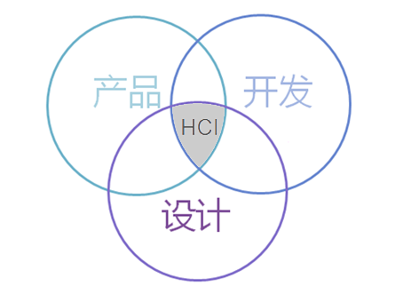
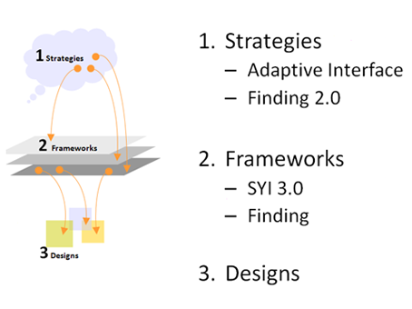

前言：今年同时是我工作的第十个年头，今天也是我的生日，如果一路往上回顾，应该是有不少故事的，如果要讲，我总是习惯性从我工作的第5个年头开始，一方面 5年前的工作经历很平庸，不为人知，缺乏戏剧性，基本在小公司，传统IT企业厮混而5年后的工作履历会被更多关注到，因为是在TX，因为有机会做大家都认识的产品的体验设计，被曝光在一个明星岗位上，另外一方面因为我那时还叫阿标，在设计的江湖上，阿字辈说明还比较年轻，现在我被叫标叔很多年了，同时经常能有幸被一拨拨新人设计师拉上，借公司培训的要求，在大家好奇的围观中，自愿或者半自愿地痛说革命家史。其实神马都是浮云，这事第一年挺新鲜的，但讲了n次后，我觉得自己像个祥林嫂了，有种想吐的感觉，还不如写个履历示众好 ，在古代叫传，咱位卑言轻，等别人作传是不可能了，这事就只能自己动手，有几个好处，一方面可以“真诚”地赞美一下自己，就像TangJ做过的一样，更大的好处是这样就不用每次都重复再重复，一次写好，甚至可以用好几年，就像杰斐逊写独立宣言一样，写得好，几百年都可供后来者一拨拨瞻仰，十年是个坎，借这个机会，回顾一下我的工作十年，我做设计师的十年的一些片段，别太当真，就当看故事好了。
2006年3月，一个很平常的工作日，我接到了一个自称tangmu的家伙给我电话，然后经过一轮饭局，一轮参观，一轮被面试，一个月左右的挣扎，加入到TX CDC的交互组，一直到现在。
06年算是一个临界点，之前的我一直都在所谓传统IT行业，工作按部就班，我按照流行说法，是真正进入新兴行业，这也让我有机会从两面来看，多年后，我蓦然发现，正是这样一种前后反差，让我有机会有对比的机会，总结自己的设计理念和设计管理思路，也让我始终能很冷静看待互联网行业所谓日新月异的 “新理念”，“新思潮”。
第一个想说的是做一个交互设计师挺好玩的，特别是在CDC，在早期团队规模不大的时候，大家有很多机会很容易凑在一起吃喝玩乐，印象中最深刻的是，每天中午吃饭，要冒死横穿一条大马路，然后东拐西拐进入大冲的一家小饭馆，每每想起当时的场景，都是相当怀念，很快我也融入了这样的氛围，后来我在想，这个也算是CDC的特色，大家都很本色，不装，而不装在职场上是相当难得的品质，也很容易让内心有同样认同感的人找到归属感，在后来自己有机会带领团队时，我也会特别去找一些性格外向，充满生活情趣，能搞气氛的团队开心果，但也得承认这样的设计师挺少。
在公司的第一个项目是TX K系统的交互设计，当项目负责人S，第一次召集开项目会时，我惊奇发现这个项目竟然没有产品经理，没有项目经理，只有3位开发工程师，没有需求文档，只有一个内部讨论了两次的feature list，这个情况是我从来没有遇见过的，也就是在那时我见识到早期tx研发的风格有多“敏捷”，具体那个会如何开的我不记得了，我只记得在大家期望的眼神中我站起来说，如果我们没有需求，那么让我们编一个用户使用我们软件故事吧，我尝试着将一个挺难理解的设计方式用一种大家能理解的形式在白板上写了下来，一共花了2小时，主要是包括目标用户的典型环境，用户的task，用户的预期等，两年以后，团队扩大，记得有一阵子流行关于“信仰之战”的话题，不经意间在我工作的第一个项目中，我貌似很轻易化解了这样的一种对立，后来想，其实大家不是有那么多的隔阂在，而是你采取的沟通方式是否有效，是否是团队喜闻乐见的方式，讲故事也可以讲得有方法论的，讲故事也是可以快速拉近从抽象还原为具体的，我们习惯了归纳，把鲜活的用户场景浓缩为十几条干巴巴的需求，适时演绎一下，你会发现大家简直灵感迸发，而且很有共同话题。
工作一个月后，我开始有机会参与一个当时的保密项目H，第一次开会就从早上9点到了晚上9点，我不知道的术语，我似懂非懂的概念，笔记本上记了 2页，让我感到压力非常巨大，而且接下来一个月，时间非常紧凑，需要上午出设计方案，下午讨论，晚上汇总，一周找boss汇报一次，每天我的to do list上都有 10个以上的大需求待讨论和输出，按照正常的进度，是绝不可能完成的，最猛的一次是一天推倒重来一个重大方案，同时晚上配合GUI同事，同时出三个方案，第二天上午汇总设计，下午2点汇报，没有出错，效果很理想，这种硬仗打下来，如果有机会经历了，而且挺过来了，你会相当有自信。现在经常讲新人要吃苦，我觉得就是大家得找机会打打硬仗，而不是打疲劳战，那这个苦痛过了，整个人的小宇宙能会升级不少。
同时看到了有一种牛人，属于会议动物科，让我相当佩服，可以一边开会，一边上网处理邮件，RTX，一边滔滔不觉讲产品思路，他们的CPU转动快到想开就开，想停就停，而且思路之缜密，抓谈话重点之快让人叹为观止，我一直在暗暗揣摩观察，这是怎么做到的，后来成为工作伙伴后，有幸得到传授几招，相当受用，这是后话。
说到牛人，在大型公司里，其实如果有心留意的话，有很多很对自己短板的良师，也未必是职务最高的修为最高深的那种，对我的职业生涯起重要作用的是碰到了几位良师益友，在那个懵懂无知，心高气傲的年代让我得到了收益终生的思想启蒙。
一个java控件开发工程师D，D的牛体现在只要是我能找到的效果，即使java.lang里没有,最多1周，他总能实现出来，也就是在他的字典里没有不可能实现的界面效果，和他合作的半年，我从一个似懂非懂的java门外汉，变成了一个对需要用到的38个控件了然于胸的界面规范制定者，而且从以后来看，其实对界面的钻研，无非也是因为对这些最基础东西从底层开始的钻研，当时看起来很慢很枯燥，但一旦你一字一句去求证，去推敲后，以后你就不会有很多概念上的困惑。
一个写Table基础控件的开发工程师F，F的牛体现在：两年只写一个控件，那就是table，而且这个table跟excel很像，初看无论是表现还是交互十分类似，但细细体验，你会发现有很多针对财务软件的优化，例如数字格式，例如循环嵌套，例如缩进扩展，例如大数据的换算导出的效率比 excel类封装的高几倍， 他给到我一个朴素的认识，要想做出类拔萃的软件，就要从底层技术开始，不要简单求快，找捷径，我后来发现我们的很多软件其实不会做得如此细致，一方面是时间要求，一方面慢慢大家习惯了拿来主义，初一眼没什么不同，但在极限情况下，孰高孰低，很容易就看出来了，真正的底层的，原创性的研究和设计总是非常锻炼人的，既具挑战性，现在来看，在交互设计领域我们这样的沉淀太少了，大家都忙于赶项目和需求，research的部分不够。
一个负责协同软件的产品经理H，H的牛体验在他讲他的产品策略，产品方向，产品feature时，总是能有详实的数据并恰到好处地引用到一些方法模型，并用流程结构很好展示出来，语气节奏掌握得相当到位，绘声绘色，很容易把你带入他营造的情景中，说服力强大的惊人，这个就是所谓的“气场”这个给到我一个启示，产品设计也是要讲口才，要辨析就得思路清楚，如果能把一些很主观的东西用尽可能客观的方式呈现出来，那么方案也更容易推销成功，你也能一次次通过这样的方式建立你在对方心目中的地位，有一种人叫 无冕之王，不是一定要有威权才有权威的，所谓的专业影响力是在你工作和周围同事的每一次接触中，所以从他那我能学习到的，就是保持倾听和足够的激情，珍惜并善用每一次的工作接触机会，慢慢打造自己的专业影响力。
这些牛人们常常给我很多启发，成为我的榜样，这种榜样不是说我一定要像他一样具备同样知识结构，而是说他达到他那样的深度，他是如何做到的，他的方法，他的一切技巧，都是我学习揣摩的源泉，而且我还发现一个牛人们的通用特征就是 都很谦逊，不是装的那种，很本色，所以我自己坚信的是要想成为一个牛人，就是永远要很谦虚，得从心底有这个认识，不是做给人看的那种，是觉得自己真的有很多不懂，而这种对自我的自然的低姿态有助于你心无旁骛追求到更高的学术境界。
最近正在总结通道的交互设计师能力素质模型，其实抛开具体的条例，我心里其实只有一个图，就是这样的：
 http://cdc.tencent.com/wp-content/uploads/2010/11/1.png
交互设计师的核心能力其实是三者的交集，这个也很容易看到，为什么交互其实是易学难精的，也就是你每放大一点点，你需要在每个维度上都放大很多，产品维度而言，如果你知道商业目标，产品功能，运营策略是如何制定出来，那你从源头上就找到了和产品经理对话的能力，开发维度而言，核心来讲，是你得知道技术的约束边界，知道可行性把握有多大，如果你还知道实现机制，，那你也能就找到了和开发工程师愉快合作的基石，设计维度，不多讲，具备足够的设计美感和设计品味是应该的，对设计规范、用户习惯了解越多，越能知道设计不应该做什么，不干舍本逐末的事，从这个模型上，这也很容易解释，为什么一个好的交互设计师要涉猎产品，开发，UI知识，做到最好比较全面的知识结构，我们经常讲用户体验，讲体验设计，其实有句话我一直很认同，谁讲的不记得了“体验是个人的，体检设计不是”。
顺便讲讲我觉得重要的交互设计师好习惯。
保持好奇心
我刚入行的时候，是做美术设计师，在广州一家公司，工作节奏不紧不慢，所有我有大量的闲暇时间，在那一年里我下载试玩了很多小工具，从常规的硬盘分区，到3D渲染，只要是大众软件上有名字的，电脑报上推荐的，我都很努力把它们找下来，第一时间试玩，2000年的时候正是个人网站风起云涌的时代，到01年6月的时候，那一年我收藏了差不多3000多个网站的截屏，2000多款软件，许多软件我今天还能使用，绝大多数网站已经烟消云散，也正是这段经历，让我有了一个比较宽广的视野，我的当时的经理常常表扬我有很多新奇的想法在设计界面上，而同组的一位三年的设计师却总是给不到他惊喜，大约半年后，我已经成为设计组的第一设计师了，其实他不知道的是我因为一个新人，在新的环境下人生地不熟，只能以司为家，天天与电脑相伴，借这个充裕的时间，大剂量地观摩了很多别人没时间或者不屑关注的东西，并且有意识进行了一些粗维度的整理，形成了朴素但挺实用的设计想法，实用是因为这些想法都来自当时第一线的第一手的资料，很感谢那时候互联网已经成为一般IT公司的标配了，同时感谢那个时代的个人网站和个人软件百花齐放，充满自由创新的精神。
保持同理心
很多人问过我，一个好的交互设计师最重要的潜质是什么？好几年了我都坚持说，同理心，简单来讲，就是对你周围发生的事，对你未曾经历过的人能设身处事，感同身受，不漠然，不泰然，细心是源于你内心有关怀，有在意，否则是不太能真的细心，同时，同理心和同情心是有区别的，最大的区别在态度，一个中立，一个带有偏向性，不是一回事。
保持对开发实现技术的关注度
我的第2份工作是重构工程师，最重要的目的是搭建一个市场研究公司的行业站点，以新闻，专业文章管理，论坛为主，在02年的时候，建站基本上是 jsp，PHP，asp三大流派，asp因为有很多完整的源代码可以参考，所以在一家小公司，在单打独斗的状况下，我选择了入门门槛最低的asp，因为只需要HTML+Css+asp+mySQL及free的IIS即可开始构建及调试工作，我相信那时很多个人站点应该也是在这样简陋的条件下开始的，在那一年里我有机会做网站重构的所有事情，一条龙，从UI+前端+后台，有一个MBA的海归MM配合我做运营，现在来看，技术粗糙得汗颜，但当时是真的很投入，经常一次性搜罗一批开源代码，然后逐句逐句看，一个个调整参数，看界面表现效果，也就是在那个时候养成了炫耀特效的毛病，这个也是一个懵懂技术工程师很朴素的毛病，恨不得整个网站都挂满javascript小插件，恨不得所有的表格都能用到我比较测试了十多种圆角实现方式，最后优化过的那个，网站体验口碑可想而知，后来在几次改版调整中，我逐渐开始关注什么是合适的UI表现力，什么是好的版式设计，如何做到内容取胜，更重要的是如何在最恰当的时候用到最合适的技术方式来表现，我一直有个挺固执的想法就是所有做交互的人入门应该先从coding开始，做测试一行，这样你做什么设计你脑子里考虑到维度会很丰富，而且实际，同时你会很严谨，同时你会有机会去想如何利用到强大的开发工具开发平台为我所用，而不是只局限在ps，fw的框架下，在06年的时候，开始有作ui designer工具的想法，其实也是因为当时在用dreamweaver urtal时产生的念头。
保持独立思考和思辨精神，不盲从，不媚外很重要，注重实用性很重要，以upa为例，很多设计师都知道UPA，09年的大会是我第4次参加了，今年没去了，越来越有感触，UPA上的主题嘉宾就像结婚喜宴上的烤乳猪（绝对没有不敬的意思，这个是不恰当的比方，只是我想不到更好的菜了），最贵，最体面，但是否是最好吃就打个问号了，也许烤乳猪本身是好东西，但没有按照亚洲的口味来调过，可能最有价值的反而是乳猪下作为点缀的香菜，胡萝卜花，因为这个花还比较新鲜 比方ideo的视频，比方各地的幸福指数 如果我没记错，基本上这几年的主题都是这样的范畴，“什么是设计？”"我们为什么要做体验设计？我们要考虑人的因素，要了解人的需求？要了解人的背景，文化，社会因素我们要从多个纬度考虑设计” 我想说的是，我们为什么的问题我们已经没有疑问了，我想知道的是这些大师在行业中的最新创造，最新思考，最新观察，最新思考 不要他们几十年的经验！真正推动这个世界进步的不是经验，是鲜活思想，当然也不能全怪这些大师，他们老了，不再活跃于第一线，其实他们也是离互联网浪潮最远的人。
特别是在中国互联网行业，真正做的好其实都是本土企业，土生土长的设计师作出的最“土”的设计反而是最受市场欢迎的产品，无论是QQ还是淘宝. 原因也许很简单，因为我们每天都在面对着海量的用户在不停的test，test，test，在互联网行业没有谁是先知，产品规划甚至都没那么重要，关键是要要改得够快，改的够贴近用户的心。
07年的时候，有机会因为做了H项目，可以以此作为蓝图，领会thomas，Enya的精神，系统想想适合部门的完整的设计流程是什么？这个时候，我发现在一个严谨的传统IT行业做过的好处，那就是对流程打造有着天然的亲近感，因为曾经感受到了一个优秀流程+工具带来的协同工作的巨大好处，所以不需要动员，基本上就干劲十足，这里有必要提一下CMM软件能力成熟度模型)思想对我的影响，具体的我不想多说，其中提到 文档建设和知识管理是一项非常需要重视的工作，特别是软件开发的过程管理，是衡量一个团队研发质量的重要参考依据，因为最终做流程，做规范，做知识管理建设，其实终极都可以归纳为三点，不犯同样的错误，做有价值的创新，进行有效率的沟通，也就是在做这个设计流程的过程中，我感觉部门的所有老大开始将知识体系建设，做有规范的设计 认识提到了战略的高度，这个也是后来为何我们能去做比较完善设计师培养制度的基础，也因为做设计流程，经过很多次的碰撞，推敲，大家其实在是在设计方法论方面逐渐达成共识了，后来的很多团队管理为何推行比较顺利，我觉得和做了这个研讨有很大关系，我也看到很多内部设计团队在沉淀很多方法很多流程管理方法，但都对具体产品影响不大，在产品设计中中逐渐被边缘化或者被挤压得没什么话语权，现在结合当时自己做的经验来看，有两点是教训可能是他们疏忽了，第一，关于设计流程的梳理，一定要从上往下达成共识，最好先做完整流程，再做细分流程，不要颠倒，这个跟先立宪再立法的道理类似，第二，一定要有一个相对成功的案例做蓝图，不能只是关门来找，而且要有勇气和魄力将它绑定到公司的或者合作部门的主流程上，不能只是设计线内部自己玩。
关于模块化设计和标准化设计，现在在CDC这个比较被推崇，也在默默在布局做的更好，也不是只是设计师一个角色的事，需要有开发，甚至是产品的角色加入到这个生态链中来，这个不是很多人能理解，其实模块化和标准化设计都比较简单，想像积木就好了，如果是一副积木要摆多种样式的城堡，那就是模块化，如果是多套积木要同时摆一个城堡，这就是标准化，当你把城堡想像成一个项目，把积木想像是你所有的设计模板时，作为一个设计管理者你就会有很多件事可以做了，在09年的UPA大会上我分享了统一体验的设计，也正在做，实际上讲，应该算是做的有条不紊，就等最后两根大梁接上了，具体是什么，我先卖一个关子，我一直有个愿望，希望在这个团队中沉淀的东西，最好是可以被复制操作的模型或者有效工具，而不仅仅是输出观点或者心得，越是务实的，越是花时间积攒的，越是能造福所有设计师的，这也是TX.CDC.HCI team作为业界最大交互设计团队应该有的行业责任和意识。
08年开始，团队进入快速发展期，团队逐渐扩大，手下的新人越来多，需要带领的人和主导或者评审的项目越来越多，往往是几个设计项目在同时做设计，除了自己要做设计，还要审核别人的方案，时间和精力都是成倍付出的，但这些在个人绩效上通常又很难体现，看起来是吃亏了，其实正是这样才锻炼了自己的多并发处理任务的能力，也让自己有机会从不同视角审视这个团队的全局。
还有一个感触是在设计问责制下，会发现一个人的力量真是太渺茫了，也就是从那时起我有了培养设计团队骨干的想法，原来只是有朴素的师傅带徒弟的想法，但发现速度太慢，另外就是良莠不齐，不同师傅带出来徒弟水准不一，而原来的师傅们坦白讲都太新了，在ERP领域，一个行业专家 10年以上，20年以上资历的比比皆是，而在互联网行业，4，6年还在一个公司做一线的资深设计师都挺少，一方面外面的诱惑太大，很多人在第2年，第三年又有机会得到很优厚的跳槽机会，对于我这样的团队而言，更是被人时刻虎视眈眈着，其实一个交互设计师要成熟起来，三年是一个坎，最好踏踏实实做三年，然后在说做管理或者做其他的事，再讲讲为什么以三年为期，这个有点武断，结合我自己的经验，我自认不是笨人，还有些小聪明，03年加入KD到06年离开，我一直很感激这段经历，让我从一个交互门外汉，通过项目，观摩到什么是高效的流程管理，什么是大型团队作业，什么是真正的软件架构分层，那段时间里我就想一块海绵，尽情吸收着各种对我有用的养分，我经常偷偷去听 销售同事的演讲分享，借项目的便利 听开发同事讲解最新的JAVA，C++ 架构技术分析，用心揣摩研发中心的年度规划ppt思路，虽然是个小兵，但我心里一直有个隐约的声音告诉我，当我有一天需要做这些事时，我不必毫无头绪，多年后我一直很庆幸自己不务正业上了这么多杂七杂八的课，我的流程管理思想，我的文档管理意识，我对软件架构的理解，我对技术演讲的热爱，无不是在这潜移默化的影响中，没有3年的历练，所谓的综合能力是不太能转化为真正的核心能力的，一个成熟的交互设计师核心能力是什么？就是在自己的专业内在复杂不确定的因素中能将设计“一次作对”，并达到设计表达清晰，准确，完整，设计的方案结构最简，实现成本最低。这些都不简单只是交互设计专业本身精修能带来的。
另外，一个成熟的交互设计师，最好能说，能写，能做，能做这个应该是基础要求，但要做好其实不容易，我自己有个体会，就是多写技术专题，最好当论文来写，一般写技术专题，不仅能使自己进一步理清思路，也会加深对问题的理解，因为在写的时候才会发现，有些问题原来自己并不清楚，给别人讲课也是如此，写和讲看起来都是在帮别人，实际上都是与己有益的事。
关于做导师带新人的几点核心体会，很重要的一条培养他的专业自信，中国的企业里从事交互设计，或者以体验设计，可用性，产品设计名义做着类似设计的从业人员越来越多，也许是我的偏见，我到目前为止仍然认为中国的交互设计师们仍然没有成功掌握深层次技术，这个和人员的组成来源有关系，多数的从业者差不多都是学工业设计，甚至美术设计出生的人，很多公司是靠着这样一批没有开发，没有业务经验经验的新人开始“可用性”设计之路，加上交互设计这个行业其实入门的门口很低，和产品经理的入门门槛类似，也正是如何，你会发现一大批的人被卡在进阶的路上，同时因为缺乏技术背景及业务知识，在团队作战中很轻易地就沦为作图的工具，久而久之就被边缘化了，俗称跑龙套，这个不是这个职业的悲哀，而应是人的问题，没有实际经验，很多人纸上谈兵多了，自我感觉良好，一到实际工作中就因为缺乏技术背景及业务知识，只能靠设计表达上的一点优势立足了，这个是很危险的，我总结我在上一家公司为何能工作自如，有极大的工作自信，其实总结到最后，我觉得是因为我的杂，我做过美术，所有排版，布局，用色，细节到字体字号我都比较有经验，又因为我做过web开发，对于面向对象的开发模式，包括基础但重要的软件分层，软件结构，控件的派生，重构，继承等知识都有了解，大学又是财经学院毕业，所以阴差阳错，找到了一个最佳的契合点，加上有小半年时间，我一人潜心把整个软件的UI规范重写了一遍，反响很好，这样在在最需要树立职业自信的地方找到了信心，也坚定了我是一个合适的交互设计师的信念。
再深入说说自信的问题，很多设计师其实不自信自己是做交互设计师的“料”其实这个自信不是自己暗示的，是真的需要有一个个成功案例来佐证的，如果你恰巧有公认的成功案例，那你一定不会怀疑自己的“天生资质”，这也给到我一个启发就是培养一个设计师的自信一定要因人设事，把他放在合适的位置，给到机会，让他大胆去闯，鼓励他在自由状态下去悟，不要太干扰他，一旦他收获了真正的自信，一般人是打不倒他的，而且他会对这份职业有极大的认同感。
设计师的工作是有层次的，现在越来越有感触，交互设计师的工作是需要分级分层的，我一直很喜欢ebay的一个模型，如图：
 http://cdc.tencent.com/wp-content/uploads/2010/11/21.png
你可以从中看到自己的影响力到哪，一个设计师如果是精于designs，那你是个很好的设计助理，如果能能对frameworks提出成熟方案，那应该是个很合格的交互设计师了，如果你对strategies有影响，甚至有一定决策权，那恭喜你，你理所当然应该得到所有HCIer的尊重。
于丹说，人到中年是离自己最远的时候。因为年轻的时候可以随性，年老的时候可以宁静，只有中年，那是一种担当。现在来看,在十年的这个点上，其实是我进入一个新的人生境界的开始，我不是很愿意讲自己的历史，以上说的也不完整，想到哪说到哪，但都是真话，如果能对正在路上和我同行的HCIer们有些启发，我就很欣慰了。